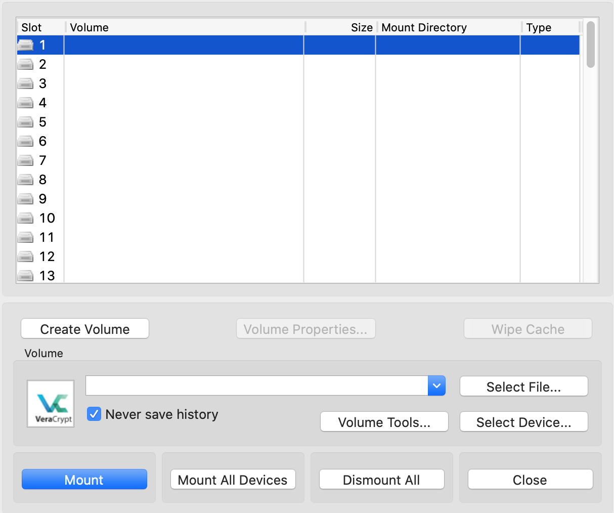
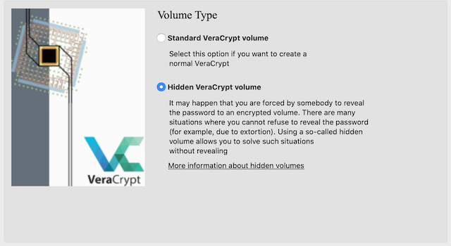
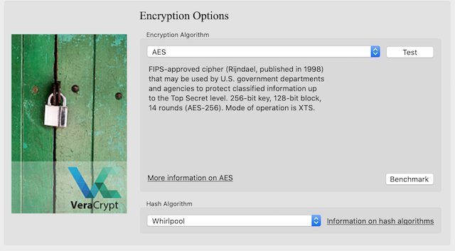

Encryption
The encryption programs discussed in this chapter are required for encrypting your HD, USB, files and folders on your HD, etc. which currently are considered safe and secure. Obviously, as technology advances these programs and encryption methods may be crackable in the future but as of today's writing of this guide they can be considered secure.
Click to learn how to encrypt containers in Windows - BitLocker
Click to learn how to encrypt containers in macOS - AES 256
Useful encryption programs to encrypt your folders and USBs with:
https://veracrypt.codeplex.com
OR
https://www.truecrypt71a.com
Default encryption that comes with OS to encrypt your HD with:
FireVault (macOS)
BitLocker (Windows)
LUKS (Ubuntu, *nix, etc.)
Now before you fly off the handle about being recommended Truecrypt 7.1a, FireVault, BitLocker, etc. as some people say closed source encryption cannot be trusted, is compromised, backdoored, not secure, etc. the reality is that none of this is proven to date. You
could
say that any closed source application can be backdoored and the FBI, NSA, LE, Mi5, Ministry of Intelligence, Federal Intelligence Service, CSIS, ASIS, FSB, and other agencies have the keys to decrypt everything but the reality is they're not going to waste that ace in their pocket by revealing to the world they caught little old you and that they've broken XYZ encryption. If they have somehow broken or backdoored todays current encryption standards they'll be focusing on the actual legitimate state sponsored attacks and bigger fish before letting everyone know that they've broken XYZ encryption and they caught a little fish online meth dealer. If they do reveal they've compromised XYZ encryption just to bust you because you're that big of fish well then shit man I think you're fucked. Maybe.
It's important to note that cryptography analysts and cryptography experts would be alerting the public by posting on FB, Twitter, and going to the media if XYZ encryption is broken or backdoored because it sure as fuck won't be you who discovers this. It's in your best interest to be following some sort of social media keeping current on hacker news, IT security, Tor updates, etc. which will alert you of when and how such encryption has been broken.
Here are some places to bookmark and visit from time to time:
http://darkzzx4avcsuofgfez5zq75cqc4mprjvfqywo45dfcaxrwqg6qrlfid.onion
http://darkfailllnkf4vf.onion
You're not a cryptography expert and probably will never be one so stay informed as best you can and use the current recommended encryption programs until quantum computing fucks everything up. Keep yourself updated on court cases, arrests, other cases that involve encryption, and watch the news. Don't just implement shit and 5 years down the road be surprised that XYZ encryption is no longer valid. Pay attention because our current encryption standards will one day be broken.
You should be encrypting your hard drive with full disk encryption (BitLocker, FireVault, LUKS) and use a password of at least 15+ characters with special characters which can be remembered easily. Again, choose the encryption that's known at the current time to be effective.
As you'll come to see when you read about the Silk Road creator and AlphaBay admin arrests is that whatever setup you choose to implement whether that's using VMs or booting directly from a USB you want to ensure nothing on your "work" laptop can be associated to your real identity in any way possible. Encrypt your USBs, folders, and encrypt your HD. If you do all of that then you should be fine (unless they've cracked the encryption standards of BitLocker, FireVault, LUKS, Veracrypt, etc. or they grabbed you with your laptop open and unencrypted). If they've cracked those encryptions then yes you're fucked if you've been arrested as is the whole internet really. If this is the case then whatever encryption is broken should make the news headlines as it'll affect everyone globally. Pay attention!
But let's say you fucked up somehow and they do have your laptop. If you've heard of Silk Road then you should be aware it's no longer operational and the administrator has been jailed for life. He made an OPSec error and left his email where he shouldn't have and was captured in a San Francisco Library logged in to Silk Road as the admin among other things. All bad.
This goes the same for the AlphaBay administrator who was caught by Thai police and subsequently killed himself in a Thailand prison before they could extradite him to the US to face charges.
In both cases there was a distraction to get their attention to obtain their laptop powered on, unlocked, and unencrypted. This was key for the police investigation. So if you're a high level Vendor or whatever and they get your laptop when it's open, even though you've followed everything in this course blah blah blah, you're still fucked. Best case scenario is you want your door kicked in when your laptop is off and everything encrypted. If you get grabbed when your laptop is open you should put %110 in getting that laptop locked or turned off because you're fighting for your life here, literally, so treat anything out of the norm as suspicious when sitting at the coffee shop, work, library, etc. and pay attention to your surroundings when doing your thing. But honestly these cops are fucking clever. As long as you're not using your home network or somehow crossed online identities leading them back to you it's very difficult to track you especially if you throw in the items you'll learn in this course you're pretty much impossible to track. But it all doesn't matter if they somehow have caught you with your laptop open and everything unencrypted.
Do you know about Silk Road? Do you really know the story? Do you know about Alphabay? Even if you think you do just read the articles below and relive the drama.
Click to Read - The untold story of Silk road Act II (search document for "halfway" and read from there until the next image in the document)
If you want, you can read part 1 and all of part 2. It's an excellent insight into the arrest of the Silk Road administrator.
Click to Read - The untold story of Silk road Act I
Click to Read - The arrest of AlphaBay admin
You read it? Damn right? Fucked up. What we can take away from this is we know that by having our laptops powered on, unlocked, and unencrypted when the police nab you then you're fucked. Were the admins of Silk Road and AlphaBay idiots? No! They made a mistake and crossed identities and left a digital trail. If it wasn't for that who knows how long their tyranny could’ve lasted for. We want to learn from this.
Let's say they do get your laptop, hopefully locked and encrypted or you're done son, say nothing and request a lawyer. They will have circumstantial evidence but will need that solid key piece to actually link it to you! If they have enough evidence against you why in the world would they be wanting the information on your laptop. This is what they will need, and this is what you need to keep clean and secure.
Just like O.J Simpson was thought to be guilty, everyone knew he was, but all the evidence was circumstantial thus he was acquitted. This is basically your goal when law enforcement (LE) has nabbed you, if they nab you. Encrypting sensitive details will keep LE eyes from finding your logins, forum IDs, e-mails, aliases, BTC addresses, etc. which of course will break the connection between you and who they're looking for.
Depending on where you live it may be a crime not to give up your passwords to LE when being investigated for a criminal offence. You should look up what "potential" crimes you will be charged with what you're trying to accomplish or doing right now and then compare the two and see which the lesser crime is to take.
Encrypting your HD, USB, and everything is an important step in securing your laptop so don't overlook it!
VeraCrypt
VeraCrypt is simple to use. Simply click on "Create Volume" and follow through the instructions step by step as presented to you by VeraCrypt.

Once you've clicked on "Create Volume" you'll have an option to create a "Standard VeraCrypt volume" or a "Hidden VeraCrypt volume". After researching into the Hidden Veracrypt volume it's advisable to create this type of volume when encrypted your HD, portion of your HD, or any USD/micro SD.

A hidden volume is an ecrypted contained that is stored within another encrypted container. When you create a VeraCrypt container the entire thing is filled with random data to it's capacity. This will appear to be one encrypted data container where in fact you're able to decrypt the first container and store fake ass files there in case you'll forced to supply your password. The good news is your hidden encrypted container is still there and would require a different password to access it.
It's best to try VeraCrypt and encrypt an USB to ensure everything is functioning to your liking before comitting to keeping everything on a USB. You want to feel comfrotable encrypting and decrypting before putting all your hard earned BTC on a USB only to fuck it all up and corrupt the data.
If you want more information on VeraCrypt Hidden volumes then click on "More information about hidden volumes" when setting your shit up and also check into the "Security Requirements" as seen in the screenshot above and more in "Precautions Pertaining to Hidden Volumes".
When you come to the screen of which Encryption Algorhythm to use it's recommended to select "AES" with "SHA-512" or "Whirlpool". The choice of encryption algorithm does not affect securing your data. AES-256 encryption will be exactly as secure as Serpent(AES) or Serpent(Twofish(AES)) but considering AES is the only hardware-accelerated encryption algorithm in all reasonably modern processors choosing any encryption algorithm other than AES-256 will unnecessarily slow down your reading and writing speeds without providing any additional security benefit.

You can read up more VeraCrypt and the encryption algorithms below.
Click to Read - Comprehensive guide on securing systems
Click to Read - Breaking VeraCrypt containers
Click to continue to Chapter 6